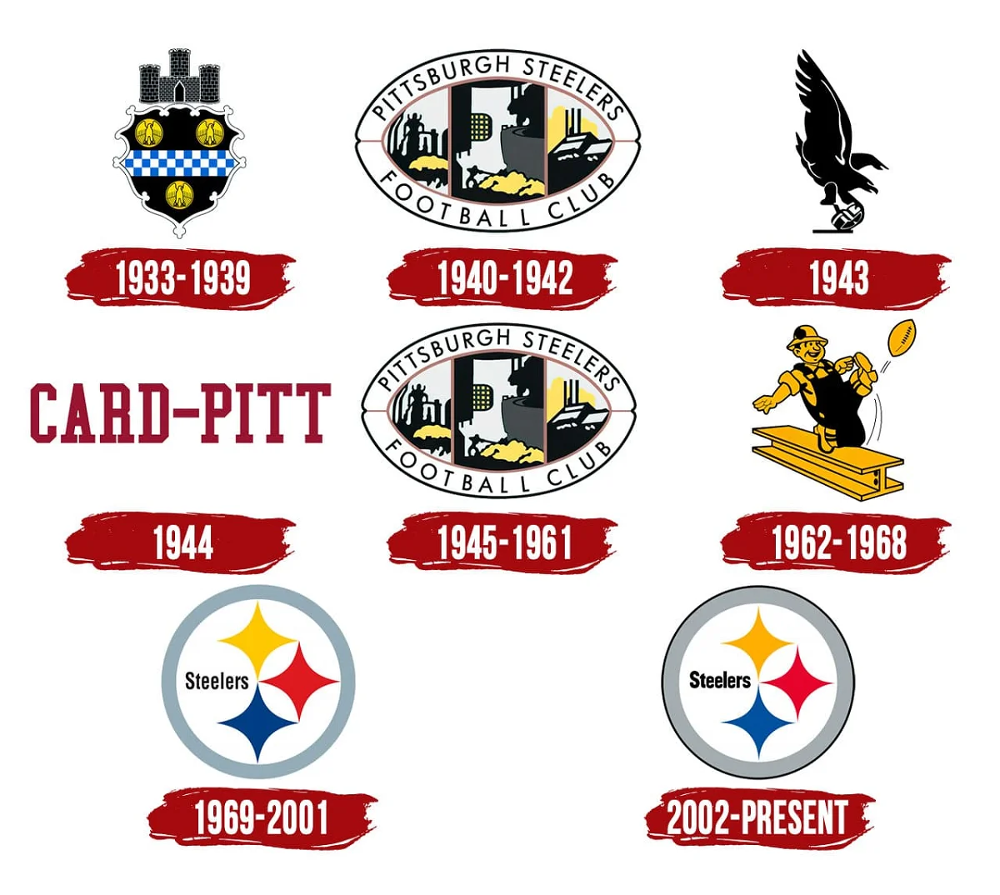
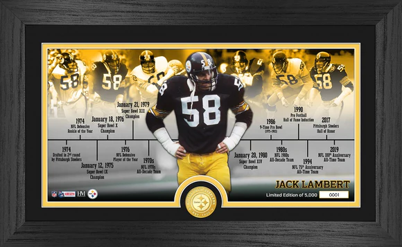

Origins
Arthur J. Rooney, known as "The Chief," purchased an NFL franchise for Pittsburgh for $2,500, making the team one of the league's oldest franchises.
Early Years
The team, initially named the Pittsburgh Pirates, played its first game on September 20, 1933, against the New York Giants. They played their home games at Forbes Field, which they shared with the Pittsburgh Pirates baseball team.
The Name Change
In 1940, the team officially changed its name to the Pittsburgh Steelers to better represent the city's manufacturing heritage, particularly its steel industry.
Legacy
Since their founding, the Pittsburgh Steelers have become one of the most successful franchises in NFL history, with numerous division championships, conference titles, and six Super Bowl victories.
Steelers Logo Evolution

Steelers Timeline
